Milestone 1 — Project Description
Overview-ul proiectului + modelul de business + validări inițiale.
🧠 Therapy Match (Fancy Wiki / Fiki)
Therapy Match este o platformă care reduce oboseala decizională în alegerea terapiei printr-un proces de matching transparent și ghidat, explicând “de ce” sunt recomandate anumite opțiuni. În paralel, platforma oferă valoare terapeuților (în special celor la început de drum) prin organizare, acces mai ușor la clienți și un workflow mai structurat.
Echipa Noastră
Băluță
Teodora-Valentina
Project Manager
teodora.baluta2107@stud.acs.upb.ro
Costea
Maria Cristina
UX/UI Designer
maria.costea2604@stud.acs.upb.ro
Budulan
Andreea Cristina
Lead Developer
andreea.budulan@stud.acs.upb.ro
Problema
Găsirea unui terapeut potrivit este un proces haotic: liste lungi de opțiuni, lipsă de transparență despre metodologii, și compatibilitatea reală fiind descoperită prea târziu. În consecință, apare “oboseala decizională”, iar mulți pot renunța sau întâmpină ezitări în a începe terapia.
Soluția / Value Proposition
Therapy Match oferă un proces ghidat de “discovery” și matching transparent, explicând “de ce” sunt recomandate anumite opțiuni și punând accent pe compatibilitatea de stil între client și terapeut. În paralel, platforma creează valoare pentru terapeuți printr-un sistem organizat pentru programări, clienți și notițe.
Business (M1 Requirements)
🎯 Customer segments
- Primary: Tineri (Gen Z / Millennials) care au anxietate la primul pas și vor un proces ghidat și încredere în selecția terapeutului.
- Secondary: Persoane deja în terapie care vor continuitate și interacțiune mai bună între ședințe.
- Secondary (supply): Terapeuți la început de drum care au dificultăți în găsirea clienților și doresc un tool de organizare.
⚔️ Competition
Piața include platforme de tip “director/listă” sau marketplace-uri de terapie. Exemple:
- BetterHelp (global, matching terapeutic online)
- Talkspace (terapie online cu psihologi licențiați)
- Hilio (România, terapie & consiliere)
✨ Advantage
- Matching transparent cu explicații (“de ce” este recomandat terapeutul).
- Compatibilitate de stil și structură, nu doar filtrare după criterii de bază.
- Instrumente utile pentru terapeuți (programări, clienți, notițe).
📏 Key metrics
- Conversie newsletter → sesiune rezervată
- % utilizatori care finalizează matching
- % utilizatori care programează după vizualizarea matches
- Retenție după prima ședință
- # terapeuți onboarded complet (profil + disponibilitate)
💰 Cost structure
- Infrastructură cloud + hosting + baze de date
- Marketing și parteneriate
- Dezvoltare produs și mentenanță
- Analiză UX & teste
- Contabil (taxe și conformitate)
- Avocat (contracte, verificare documente terapeuți)
- Payment processing fees
- Customer support
💳 Revenue streams
Platforma reține un comision de 15% pentru fiecare sesiune plătită prin sistemul integrat, ca parte din acordul contractual pe care terapeuții îl acceptă digital (vezi Milestone 7).
Milestone 2 — Validation 1 (Idea)
Customer Discovery: problem → soluție, documentat cu interviuri + chestionar + intent signal (newsletter).
🔍 1) Cum am identificat problema
Am pornit de la observația că oamenii trebuie să aleagă un terapeut din liste mari, fără ghidaj clar și fără posibilitatea de a evalua compatibilitatea (stil, structură, personalitate). În practică, mulți aleg pe baza “vibe-ului”, pozelor și descrierii, iar potrivirea reală se descoperă abia după una sau mai multe încercări.
În paralel, am observat și o problemă pe partea de “supply”: pentru terapeuții tineri, intrarea pe piață este dificilă, iar munca de zi cu zi este fragmentată (notițe în mai multe locuri, calendare separate).
💡 2) Ce am crezut inițial că este soluția
Ipoteza inițială: un sistem de matching transparent care educă utilizatorul înainte de a-i prezenta specialiștii, pentru a reduce anxietatea la primul pas și numărul de “încercări” până la o potrivire bună.
Pe parcurs, soluția s-a extins: pe lângă matching pentru clienți, Therapy Match oferă și o zonă dedicată terapeuților (mai ales juniori), cu instrumente pentru organizare (programări, profiluri clienți, notițe) și onboarding.
🧭 3) Customer Discovery Plan (overview)
9 interviuri în total: 5 clienți + 4 terapeuți. Concluziile detaliate + dovada (Drive) sunt în Milestone 4.
12 respondenți (Gen Z / Millennials) pentru a valida severitatea problemei și semnalele de încredere.
Newsletter + lead collection (Formspree) pentru a valida interesul real (proof în Milestone 3 / 5).
🖼️ 4) Dovadă (chestionar) — screenshots
*Fișierele de mai jos sunt linkuite direct din folderul form1/.


📊 5) Ce confirmă datele (insight-uri numerice)
Segmentul (n=12)
- 91.7% au 18–24 ani (11/12)
- 8.3% au 25–34 ani (1/12)
Experiența cu terapia (n=12)
- 58.3% au făcut terapie (7/12)
- 25% au considerat, dar n-au început (3/12)
- 16.7% nu au făcut terapie (2/12)
Dificultatea găsirii potrivirii (n=9)
- 55.5% au notat 4–5 (5/9) → greu / foarte greu
- 33.3% au notat 3 (3/9) → dificultate medie
- 11.1% au notat 2 (1/9) → relativ ușor
- 0% au notat 1 (0/9)
Utilitatea unui app de matching (n=12)
- 91.7% au notat 4–5 (11/12) → semnal puternic de utilitate
- 8.3% au notat 3 (1/12)
- 0% au notat 1–2 (0/12)
Interpretare: problema există (găsirea potrivirii e frecvent dificilă), iar soluția are “pull” (majoritatea o consideră utilă).
📌 6) Concluzii (chestionar + interviuri)
Barieră critică: “primul pas” + lipsă ghidaj → anxietate decizională.
Ineficiență: căutarea e manuală (Google, poze, descrieri), iar compatibilitatea se află târziu.
Nevoie puternică: compatibilitate umană (stil/structură/personalitate) + comunicare clară.
Condiție: matching transparent + informații corecte despre terapeuți + control pe preferințe.
Observație: există variații în studii privind retenția după prima ședință (20–57% dintre clienți nu revin după prima sesiune). Surse:
- Archer et al. 2022 – Retenția în servicii de sănătate mintală: PMC10207790
- Swift & Greenberg 2012 – Review despre dropout în terapie: PMC3708593
- Psychotherapy Networker – Reducerea abandonului terapiei: Reducing Client Dropout
🔄 7) Impact on Product (după discovery)
- Matching transparent: recomandarea trebuie explicată (“de ce X e potrivit pentru mine?”).
- Trust signals: informații corecte despre terapeuți + verificare credențiale (cerută în răspunsuri).
- Compatibilitate umană: comunicare / personalitate / stil → mai important decât doar “specializare”.
- Segment nou prioritizat: terapeuți la început de drum → onboarding mai ușor + vizibilitate + tool-uri.
- UX: reducerea anxietății prin ghidaj + control (preferințe, ce informații partajez).
*Detalierea completă a insight-urilor calitative + dovezile pentru interviuri sunt în Milestone 4 (link Drive).
🚀 8) Suntem gata să trecem la Customer Validation (selling)?
Da, considerăm că putem trece la Customer Validation, deoarece:
- Problema este confirmată (55.5% notează dificultatea cu 4–5).
- Există “pull” pentru soluție (91.7% notează utilitatea cu 4–5).
- Din interviuri (detaliat în M4) reiese nevoia de transparență + compatibilitate de stil + structură digitală pentru terapeuți.
- Avem intent signal prin newsletter/landing page (proof în M3/M5).
Milestone 3 — Wireframes & Landing Page
Structura aplicației (wireframes) + landing page & prototip live.
📐 Wireframes (bazate pe aplicația funcțională)
Pentru acest milestone am folosit capturi din aplicația funcțională ca wireframes high-fidelity. Scopul aici este să arătăm structura, layout-ul și navigația (nu toate ecranele din produs).
Am ales ecranele de tip dashboard deoarece ele concentrează cele mai importante funcționalități și reprezintă “harta” aplicației.


🛤️ Fluxuri principale (descriere)
Flux Client
- Educație: utilizatorul pornește din meniurile de informare (explicarea problemelor + tipuri de terapie).
- Test Therapy Match: completează chestionarul pentru matching.
- Rezultate: vede recomandările în Your Matches sau caută în Explore Therapists.
- Programare: alege un terapeut și face o programare.
- Calendar: își vede toate programările în Calendar.
Flux Terapeut
- Profil: își setează informațiile (descriere, specializări, stil etc.).
- Availability: își definește intervalele disponibile.
- Appointments: își vede programările.
- Clients list: vede lista de clienți și poate intra pe profilurile lor.
Capturile detaliate pe fiecare ecran (educare, matching, profil terapeut etc.) sunt folosite ca dovadă în milestone-urile următoare, unde documentăm în detaliu deciziile de UX și concluziile din interviuri.
🚀 Prototip Live (Vercel)
Aplicația este live pe Vercel, cu interfață separată pentru clienți și terapeuți.
🌐 Landing Page (Newsletter)
Landing page-ul este folosit pentru early access și validarea interesului inițial. Lead collection + analytics sunt documentate în Milestone 5.
Vezi landing page (newsletter) →🧾 Cod sursă
Milestone 4 — UX Research & User Flow
Interviuri face-to-face (detaliate) + persona + user stories / flows + update wireframes pe baza insight-urilor.
🧭 Context (continuare din M2)
În Milestone 2 am prezentat validarea inițială a ideii (observații + proof-uri). În Milestone 4, mergem în profunzime cu interviuri calitative face-to-face, analizate și transformate în: personas, user stories, user flows și update-uri de wireframes (capturi din aplicația funcțională).
Notă: fluxurile și ecranele sunt prezentate cu “high-fidelity wireframes” (screenshots) pentru că produsul este deja implementat.
🎤 Interviuri face-to-face (minim 3) + dovadă
Vezi Interviurile (Drive) →În această etapă, am realizat interviuri cu utilizatori (segmentul principal) și terapeuți pentru a înțelege: bariere reale, nevoia de control, ce crește/rupe încrederea și cum arată procesele reale (booking, onboarding, organizare).
Utilizatorii cer explicații clare ale criteriilor de matching; altfel scade încrederea.
Pentru primul pas, matching-ul trebuie să fie ghid, nu doar listă.
Utilizatorii vor să decidă ce informații sunt private și ce ajunge la terapeut.
💬 Feedback de la Intervievați (rezumate)
Mara, 22 de ani
Cercetător Științific
Mara are deja experiență cu terapia și a ajuns la terapeut printr-o recomandare indirectă, fără să știe foarte clar ce tip de terapie urmează. A avut încredere în proces și în terapeut, iar relația terapeutică a funcționat bine, fără nevoia de a schimba specialistul. Pentru ea, terapia este un spațiu de explorare și reflecție, nu neapărat un proces foarte structurat sau orientat pe teme. Percepe AI-ul ca un instrument util pentru clarificare și calmare, dar subliniază că nu îl vede ca pe un înlocuitor al terapeutului. Consideră important ca un sistem de matching să fie transparent și explicat, altfel poate deveni un „black box” în care utilizatorul nu are încredere.
Sonia, 22 de ani
Antreprenor
Sonia a căutat activ terapie, folosind Google și analizând mai mulți terapeuți pe baza descrierilor, specializărilor și „vibe-ului” transmis prin poze și prezentare. A avut o experiență negativă cu un terapeut prea pasiv, lipsit de structură, care nu îi oferea perspective noi sau direcție. Își dorește un stil de terapie mai activ, cu teme, structură și implicare clară din partea terapeutului. Este atrasă de scris și jurnalizare, dar consideră că multe aplicații de terapie sunt prea încărcate și pot deveni stresante. Pentru ea, compatibilitatea de stil și personalitate este esențială și ar face diferența între a continua sau a renunța la terapie.
Delia, 23 de ani
Software Engineer
Delia nu a fost până acum la terapie și se confruntă cu un blocaj puternic legat de primul pas. Nu știe ce tipuri de terapie există, cum să aleagă un terapeut și nu are recomandări din cercul apropiat. Momentul declanșator pentru nevoia de sprijin a fost o perioadă de impas emoțional, trăită în contextul unei experiențe Erasmus, marcată de anxietate și indecizie. Pentru ea, dificultatea nu este lipsa dorinței de ajutor, ci confuzia și anxietatea decizională. O aplicație de matching ar fi percepută ca o ușurare cognitivă, care să îi ofere ghidaj, structură și siguranță în procesul de alegere.
Diana, 23 de ani
Student
Diana a urmat terapie în urmă cu aproximativ un an, însă în prezent nu mai simte nevoia să continue, considerând că starea ei este una echilibrată. Ea nu se consideră bine informată în privința diferitelor tipuri de terapie. Cea mai mare dificultate întâmpinată în procesul terapeutic a fost găsirea unui terapeut potrivit, la care s-au adăugat și frici personale legate de mersul la psiholog. Pentru îmbunătățirea stării psihice, Diana a apelat în trecut la meditație. Nu a utilizat modele de inteligență artificială în scopuri terapeutice.
Raluca, 23 de ani
Student
Raluca nu face terapie în prezent, deși s-a gândit să înceapă, în principal din cauza stresului asociat facultății și a anxietății legate de sănătate. Principalul obstacol care a împiedicat-o să meargă la terapie a fost dificultatea de a găsi terapeutul potrivit. De asemenea, consideră că începutul procesului terapeutic este complicat din cauza noutății primei ședințe și a lipsei de motivație pentru a face un pas nou. Raluca nu se consideră informată în privința tipurilor de terapie, însă ar fi dispusă să le ofere o șansă dacă ar identifica terapeutul potrivit și și-ar gestiona mai bine timpul. A folosit aplicații digitale de relaxare, bazate pe sunet și exerciții de respirație, și a experimentat utilizarea inteligenței artificiale în scopuri terapeutice, însă cu un nivel scăzut de încredere în răspunsurile primite.
Anghel Vlad, 23 de ani
Psiholog • Master CBT • Formare integrativă
Vlad a absolvit Facultatea de Psihologie la Universitatea Titu Maiorescu în urmă cu doi ani și este în prezent student la master în Psihoterapii Cognitiv-Comportamentale, aflat totodată în formare în psihoterapie integrativă. Primii clienți i-a obținut prin voluntariat la un centru social de psihoterapie și prin recomandări din cercul apropiat. Descrie prima ședință ca fiind una de cunoaștere, centrată pe anamneză, motivația clientului și construirea unei relații de încredere. Consideră că motivul pentru care clientul începe terapia este cea mai importantă informație inițială. Stilul său este autentic, uman și flexibil, adaptat fiecărei persoane, iar compatibilitatea este gestionată prin capacitatea de a se adapta la realitatea clientului. În prezent își notează informațiile pe hârtie și își gestionează programările în calendarul telefonului, dar este deschis către o aplicație care să îi eficientizeze munca. Își dorește mai multă structură în proces, deși apreciază spontaneitatea intervenției. Pentru începutul de drum, subliniază importanța voluntariatului, răbdării și acceptării faptului că progresul financiar vine lent, iar provocarea principală este să nu renunți și să îți păstrezi ambiția.
Papacocea Ioana Claudia, 22 de ani
Studentă Master • Interes CBT • Formare integrativă
Ioana urmează masterul la Universitatea Titu Maiorescu din București și își dorește să se specializeze în psihoterapia cognitiv-comportamentală, fiind atrasă de legătura dintre gândire, reacțiile corpului și experiențele emoționale. Domeniile în care vrea să se concentreze sunt anxietatea și trauma, motivația fiind și experiențele personale. Ca tehnici, este interesată de abordări Gestalt și de ancorarea în prezent. Se descrie ca având un stil predominant ascultător și analitic: preferă ședințele inițial mai libere, dar ulterior mai structurate. Consideră că se poate adapta la stiluri diferite de clienți, însă recunoaște că experiența practică va clarifica acest lucru. Plănuiește să își găsească primii clienți prin social media (TikTok și Instagram) și recomandări. Este deja în formare în psihoterapie integrativă și intenționează să urmeze și o formare în terapie somatică. Cea mai mare nesiguranță este lipsa percepută de experiență, motiv pentru care ar avea nevoie de mai mult acces la experiențele altor terapeuți. Înainte de prima ședință, ar vrea să cunoască obiectivele clientului, modul în care acesta se percepe și nivelul său de răbdare, considerând că motivația reală pentru schimbare este greu de evaluat dintr-o singură întâlnire. Pentru început, preferă clienți compatibili cu stilul ei, iar potrivirea este mai importantă decât volumul.
Timeea, 23 de ani
Psiholog • Cabinet individual • Master CBT (2026)
Timeea a absolvit Facultatea de Psihologie la 20 iunie 2024 și urmează masterul în psihoterapie cognitiv-comportamentală (finalizare 2026). Are un parcurs practic intens încă din facultate: terapie cu copii cu TSA și ADHD, experiență în Penitenciarul Rahova și activitate într-un centru specializat, atât individual, cât și în grupuri de socializare cu copii cu TSA. După absolvire a obținut atestatul de liberă practică și și-a deschis cabinetul individual, lucrând în paralel și într-un alt centru cu copii cu autism. Este în proces de supervizare, urmând să devină psiholog autonom în august. A urmat cursuri și acreditări pentru utilizarea testelor psihologice. Clienții ei provin în principal din structurile unde lucrează, iar pentru cabinet a atras clienți prin rapoarte de evaluare pro bono și contact direct cu persoane interesate. Consideră că găsirea clienților este una dintre cele mai mari dificultăți ale profesiei, amplificată de lipsa posturilor la stat. Stilul de lucru este o combinație între respectarea protocoalelor și adaptarea continuă la nevoile copilului, cu accent pe flexibilitate zilnică. Nu a întâlnit incompatibilități directe, însă dacă alianța terapeutică nu se formează, ar redirecționa către alt specialist. Înainte de ședințe, primește informații generale (diagnostic, evaluări), iar în cabinet discută în prealabil despre problematici și obiective. Prima ședință este dedicată construirii relației prin „pairing”, observând interesele și reacțiile copilului pentru a structura intervențiile viitoare. Spune că emoțiile sunt inevitabile la fiecare început de caz, iar dificultatea majoră este adaptarea la reacțiile imprevizibile ale copilului.
Miruna Bodea, 23 de ani
Absolventă 2025 • Interes cuplu & sexualitate • Art-terapie
Miruna a absolvit Facultatea de Psihologie în vara anului 2025. Pe termen lung își dorește să se specializeze în terapie de cuplu și sexualitate, însă consideră că la început e mai potrivit să lucreze pe problematici generale și să avanseze treptat către cazuri mai complexe. Nu se raportează rigid la metode prestabilite: preferă un stil natural, bazat pe reacțiile spontane la problemele clienților, integrând elemente din art-terapie și tehnici de comunicare învățate în facultate. Se descrie inițial mai ascultătoare, iar pe parcurs devine un participant activ în discuție, considerând ambele roluri la fel de importante. Preferă ședințe mai libere, cu o structură minimă orientativă, adaptabilă în funcție de direcția clientului. Consideră că se adaptează ușor la stiluri diferite de clienți, cu excepția tulburărilor severe, unde simte nevoia de mai multă pregătire. Își imaginează că își va găsi primii clienți prin recomandări, social media și platforme dedicate, deși recunoaște că accesul pe unele platforme e dificil fără experiență. Are în plan o formare suplimentară în CBT și hipnoză, completând o experiență practică de trei ani în art-terapie. Cea mai mare dificultate percepută este lipsa ghidării administrative și profesionale în deschiderea cabinetului și gestionarea aspectelor legale. Înainte de prima ședință, ar considera utile emoțiile de bază ale clientului, obiectivele și așteptările legate de terapie; suplimentar, istoricul medical și eventualele tulburări psihice pentru a evalua compatibilitatea profesională. La începutul carierei, ar prefera clienți compatibili cu stilul ei pentru a-și construi încrederea, urmând ca ulterior să își lărgească aria de adaptare.
🎤 Discovery Process & Findings
Clienți — Interviuri & concluzii
Segment: Gen Z / Millennials (utilizatori & non-utilizatori)Structura Interviului (Clienți):
1) Istoricul de căutare
- • „Povestește-mi despre ultima dată când ai căutat un terapeut / te-ai gândit la terapie.”
- • „Cum ai început efectiv căutarea? (Google, recomandări, platforme)”
- • „La câți terapeuți ai ajuns până ai găsit potrivirea?”
2) Claritate & încredere (Discovery)
- • „Cât de clară îți era diferența dintre tipurile de terapie / probleme abordate?”
- • „Ai știut ce să cauți sau ai ales pe baza ‘vibe-ului’, pozelor, descrierii?”
- • „Ce frici ai avut legate de prima ședință / de a începe?”
3) Experiența ședințelor (pentru cei care au făcut terapie)
- • „Cum decurge începutul unei ședințe?”
- • „Ai simțit că pierzi timp reconstruind ce s-a întâmplat între ședințe?”
- • „Cât timp aloci între ședințe pentru reflecție / teme / jurnal?”
4) Bariere și alternative (cei care nu încep / renunță)
- • „Ce te-a oprit concret să faci prima programare?”
- • „Ce te-ar ajuta să începi sau să continui?”
- • „Ai folosit tool-uri (jurnal, aplicații, respirație, meditație) sau AI? Cum te-ai simțit?”
Rezultate Cheie (Key Findings) — Clienți:
🔴 Barieră Critică: “Primul pas” + lipsă de ghidaj → anxietate decizională (mulți amână sau renunță).
🔵 Ineficiență Validată: căutarea e manuală (Google, poze, descrieri), iar compatibilitatea se descoperă târziu.
🟢 Nevoie puternică: compatibilitate de stil/structură/personalitate (nu doar specializare).
🟣 Condiție de acceptare: matching transparent (nu “black box”) → explicații clare “de ce X”.
🟡 Tool-uri digitale & AI: interes, dar încredere mixtă; digitalul ajută doar dacă susține terapia umană.
Terapeuți cu clienți activi — Interviuri & concluzii
Segment: practică activă (cabinet / centru / ONG)Structura Interviului (Terapeuți cu clienți):
1) Background profesional
- • „Când ai terminat facultatea și ce formări ai urmat ulterior?”
- • „Ai urmat master / formare suplimentară?”
2) Atragerea clienților
- • „Cum ți-ai găsit primii clienți?”
- • „Prin ce canale vin clienții în prezent?”
3) Structura primei ședințe
- • „Cum decurge prima ședință de terapie?”
- • „Ce elemente sunt cele mai importante pentru tine în prima întâlnire?”
4) Informații utile despre client (pre-onboarding)
- • „Ce informații ți-ar fi utile să știi înainte de prima ședință?”
5) Stil terapeutic & compatibilitate
- • „Ai un stil propriu de lucru?”
- • „Ai avut situații de incompatibilitate cu clienți?”
- • „Cât de importantă este adaptabilitatea?”
6) Instrumente digitale + eficiență
- • „Ce instrumente folosești pentru programări și notițe?”
- • „Ce activitate îți consumă cel mai mult timp?”
- • „Ai fi interesat de aplicații care să îți ușureze munca?”
Rezultate Cheie (Key Findings) — Terapeuți cu clienți:
🔵 Ineficiență Validată: folosesc foi/caiete/notițe pe telefon + calendare separate → informații dispersate.
🟢 Dorință clară: compatibilitate terapeut–client (stil) → alianță mai bună și risc mai mic de abandon.
🟣 Oportunitate: pre-colectarea informațiilor înainte de prima ședință → onboarding mai eficient și mai clar.
🟡 Deschidere digital: sunt deschiși către un tool care eficientizează munca (programări + notițe + istoric).
Terapeuți la început de drum — Interviuri & concluzii
Segment: master / formare / juniorStructura Interviului (Terapeuți la început):
1) Direcție profesională
- • „Pe ce tip de terapie vrei să lucrezi?”
- • „Ce tip de probleme ți se pare cel mai natural să abordezi?”
- • „Ce exerciții sau tehnici ai vrea să aplici în ședințe?”
2) Stil personal
- • „Cum te-ai descrie ca stil: mai ascultător sau mai activ?”
- • „Preferi ședințe structurate sau mai libere?”
- • „Crezi că te poți adapta ușor la stiluri diferite de clienți?”
3) Intrarea în profesie
- • „Cum crezi că îți vei găsi primii clienți?”
- • „Ai formări suplimentare sau vrei să faci?”
- • „Ce simți că îți lipsește ca să începi cu încredere?”
4) Pregătirea pentru client
- • „Ce informații ai vrea să știi înainte de prima ședință?”
- • „Ce ți-ar fi greu să afli doar din discuția inițială?”
5) Matching & platforme
- • „Cum ți s-ar părea să primești clienți potriviți stilului tău?”
- • „Ce ți-ar da mai multă încredere: mai mulți clienți sau mai compatibili?”
Rezultate Cheie (Key Findings) — Terapeuți la început:
🔴 Barieră Critică: acces dificil la carieră și clienți (voluntariat aproape obligatoriu, promovare intensă, costuri mari de formare).
🟣 Presiune emoțională: nesiguranță profesională + nevoie de ghidare/validare (academică & practică).
🟢 Dorință clară: matching pe compatibilitate (stil) → crește încrederea la început și reduce abandonul.
🔵 Oportunitate de produs: platforma poate oferi și suport profesional (administrativ + structura muncii), nu doar clienți.
👤 User Personas (2 segmente cheie)
Pe baza interviurilor, am definit două personas principale: un utilizator (client) care caută ghidaj și transparență, și un terapeut la început de drum care are nevoie de structură + acces la clienți + organizare.

Alex Ionescu
Software Engineer
"Caut un specialist care să înțeleagă ritmul meu de viață. Nu am timp să testez terapeuți până nimeresc pe cineva ok."
Ce își dorește
- Să găsească o formă de terapie aplicată (CBT sau similar) cu rezultate vizibile.
- Să vadă progres clar, fără ședințe “în gol”.
- Să aibă încredere în recomandări prin explicații (“de ce îl potrivim cu X”).
Ce îl oprește
- Căutarea manuală prin sute de liste este epuizantă.
- Nu știe ce tip de terapie i se potrivește → anxietate decizională.
- Neîncredere în “black box matching”.
Cum răspunde Therapy Match nevoilor lui:
Fără “Black Box”
Explicăm de ce sunt recomandați anumiți terapeuți, în funcție de obiective + stil.Ghidaj în pași
Onboarding + educare despre probleme și terapii înainte de listă.Radu Popescu
Terapeut la început de drum
"Am nevoie de clienți potriviți stilului meu și de o structură clară ca să lucrez organizat. Vreau să par profesionist, chiar dacă sunt la început."
Obiective
- Să își creeze un profil credibil (specializări, stil, descriere) și să fie descoperit mai ușor.
- Să își organizeze disponibilitatea și programările într-un singur loc.
- Să aibă o evidență clară a clienților și notițelor (timeline).
Pain points
- Găsirea clienților e grea la început (promovare, platforme, lipsă recomandări).
- Programări și notițe sunt dispersate (calendar telefon, caiet, fișiere).
- Nesiguranță profesională: preferă clienți compatibili pentru a-și construi încrederea.
Cum răspunde Therapy Match nevoilor lui:
Acces la clienți compatibili
Matching pe stil + obiective → crește șansa unei alianțe terapeutice bune.Organizare centralizată
Availability + appointments + clients + notes într-un singur dashboard.🧾 User Stories (validate din interviuri)
Client
- Ca utilizator care nu știe ce tip de terapie i se potrivește, vreau un onboarding ghidat, ca să reduc anxietatea decizională.
- Ca utilizator, vreau recomandări explicate (de ce e potrivit terapeutul), ca să am încredere în matching și să nu simt că e “black box”.
- Ca utilizator, vreau să văd opțiuni și să pot explora terapeuți (online / oraș), ca să am control asupra alegerii.
- Ca utilizator, vreau să îmi programez ușor ședința, ca să nu pierd timp în mesaje / call-uri.
- Ca utilizator, vreau să-mi văd programările într-un calendar, ca să am claritate și planificare.
Terapeut
- Ca terapeut, vreau să îmi setez disponibilitatea pe zile și intervale, ca să gestionez programările rapid.
- Ca terapeut, vreau un calendar centralizat pentru ședințe, ca să evit informații dispersate (telefon + caiet + alte tool-uri).
- Ca terapeut, vreau o listă de clienți + profil client, ca să văd rapid contextul și istoricul.
- Ca terapeut, vreau să pot adăuga note după ședințe, ca să păstrez informația organizată cronologic.
- Ca terapeut (junior), vreau clienți compatibili cu stilul meu, ca să construiesc alianță și încredere la început.
🛤️ Use Cases / User Flows (cu ecrane reale din aplicație)
Mai jos sunt fluxurile principale identificate în interviuri. Pentru fiecare flux, includem ecranele relevante (high-fidelity wireframes).
Notă: Utilizatorii pornesc din dashboard și navighează pe baza meniurilor (“educare → test matching → matches/explore → booking → calendar”).
Flow 1 — Client: Educare → Onboarding → Matching → Rezultate
- Clientul intră în dashboard (punct de start).
- Se educă din meniurile de explicare a problemelor și tipurilor de terapie.
- Completează pașii de matching (Step 1–4).
- Primește lista de terapeuți recomandați (cu “de ce”).


Flow 2 — Client: Matches / Explore → Profil → Book session → Calendar
- Client vede lista de matches sau explorează terapeuții.
- Intră în profilul terapeutului.
- Programează o ședință.
- Vede programările în calendar.
.png)

Flow 3 — Terapeut: Setează disponibilitate (slots) → Save
- Terapeut intră în Availability.
- Adaugă intervale bookable per zi + copy slots.
- Salvează disponibilitatea.


Flow 4 — Terapeut: Clienți → Profil client → Note
- Terapeut vede lista de clienți (din bookings).
- Deschide profilul clientului.
- Adaugă note și urmărește timeline.
.png)

.png)
🧩 Update wireframes pe baza insight-urilor (cerință milestone)
Pe baza interviurilor, am actualizat structura ecranelor astfel încât să răspundă problemelor identificate: anxietate decizională, lipsă de claritate în diferențele dintre terapii și nevoia de transparență în matching.
Insight
Utilizatorii nu au încredere în “black box matching”.
Update
Matches afișează “de ce” (topic/stil/compatibilitate).
Insight
Primul pas e greu → nevoie de ghidaj clar.
Update
Onboarding în pași (Step 1–4) + progres vizibil + educare înainte de test.
Insight
Terapeuții au info dispersată (calendar + notițe).
Update
Zona therapist: availability + clients + notes timeline + appointments.
Dovezi (wireframes actualizate = capturi din aplicație):
🔄 Impact on Product & Concluzie Generală
Interviurile și chestionarele ne-au arătat că problema inițială a compatibilității dintre terapeut și client este doar o parte dintr-un sistem mult mai complex. În realitate, piața suferă de două nevoi majore și complementare: clienții au nevoie de ghidaj și încredere la primul pas, iar psihologii — în special cei la început de drum — au nevoie de acces mai ușor la clienți și de unelte care să le simplifice munca.
Din perspectiva clienților, principala barieră nu este doar prețul sau disponibilitatea, ci nesiguranța și oboseala decizională. Mulți nu înțeleg diferențele dintre tipurile de terapie, aleg pe baza „vibe-ului” și percep prima programare ca fiind cel mai dificil pas. Un matching rapid nu este suficient dacă este un „black box”: utilizatorii au nevoie să înțeleagă de ce primesc o anumită recomandare.
Din perspectiva psihologilor, am identificat o problemă nouă și majoră: intrarea pe piața muncii. Chiar și după facultate, master și formări, găsirea clienților este dificilă, deseori bazatǎ pe voluntariat, promovare intensă și multă incertitudine. În același timp, munca de zi cu zi este fragmentată: notițe pe hârtie, calendare separate, documente dispersate. Psihologii ar beneficia clar de un sistem centralizat pentru organizarea programărilor și a informațiilor despre clienți.
Impact on Product: Pe baza acestor concluzii, direcția produsului se extinde semnificativ. Aplicația nu mai este doar un instrument de matching pentru clienți, ci devine o platformă care conectează, structurează și susține ambele părți ale procesului terapeutic.
- Vom targeta activ terapeuții la început de drum ca segment prioritar pentru parteneriate, unde valoarea produsului este maximă.
- Vom prioritiza un sistem centralizat pentru terapeuți (programări + fișe client + notițe + obiective), dedicat exclusiv lor.
- Matching-ul pentru clienți va rămâne, dar va fi construit cu accent pe transparență, explicații clare și reducerea anxietății.
Astfel, produsul evoluează dintr-o simplă aplicație de matching într-un ecosistem terapeutic digital, care reduce abandonul, crește compatibilitatea și aduce structură și continuitate în procesul terapeutic pentru ambele părți.
Milestone 5 — Lead Generation & Collection
Lead collection (newsletter) + analytics (PostHog) + campanie de distribuție (Facebook / Reddit / outreach).
📩 Lead collection: Newsletter (Formspree)
Am adăugat pe landing page o secțiune de newsletter pentru a colecta lead-uri (email) și a valida interesul pentru lansare. Submisia este gestionată prin Formspree (rapid, fără backend suplimentar).
Landing page (newsletter):
therapymatchingapp.vercel.app/newsletter →Proof: capturi din Formspree (submissions / status / inbox).


📈 Analytics: PostHog (Pageviews + Funnels)
Am integrat PostHog pentru analytics, ca să putem urmări atât comportamentul pe produs, cât și
conversia pe CTA. În MVP urmărim:
(1) pageviews ($pageview),
(2) funnel-uri (conversii pe acțiuni cheie),
(3) utilizare efectivă (click-uri în dashboard / rezultate matching / booking).
Ce măsurăm concret (exemple):
- Client funnel: intrare în dashboard → click „Find match” → results viewed → „Book”
- Therapist funnel: dashboard loaded → dashboard viewed → click în dashboard → deschidere client
Capturile de mai jos sunt dovezi din PostHog că traficul adus pe landing / produs duce la interacțiuni reale în MVP.
Notă:
Pentru milestone-ul M5, scopul analytics este să arătăm că avem un sistem de măsurare activ: trafic → acțiuni → conversii pe CTA (ex. matching / booking). Lead collection rămâne pe Formspree (email).
📣 Bring people to landing page: Reddit + Facebook + outreach direct
Pentru distribuție (lead generation), am testat canale publice (Reddit, Facebook) și distribuție directă către audiențe relevante. Obiectivul a fost să aducem trafic către landing page și să colectăm email-uri în newsletter.
Facebook (share către landing)
Distribuire către audiență existentă / grupuri. Unele postări pot avea fricțiune din moderare (subiect sensibil).
Permalink / redirect Facebook →Reddit (feedback + trafic)
Postare într-o comunitate relevantă pentru a obține feedback și click-uri către produs/landing.
Permalink Reddit →Outreach direct
Distribuire către persoane țintite (ex. interesate de terapie / studenți / psihologi la început de drum), pentru trafic mai calificat.
Proof: capturi cu postările / distribuția (cu context).
⚖️ Comparație canale (ce a mers cel mai bine)
Am comparat canalele după: reach, fricțiune (moderare), calitatea traficului și relevanță pentru segment.
- Reach mare teoretic
- Fricțiune: moderare / topic sensibil
- Rezultat: inconsistent (depinde de grup / reguli)
- Mai potrivit pentru feedback
- Discuții calitative și claritate pe problemă
- Rezultat: bun pentru validare + trafic interesat
Outreach direct
- Cel mai targetat (trafic calificat)
- Conversie mai bună pe pași de produs (ex. matching)
- Rezultat: cel mai eficient pentru lead-uri “calde”
Concluzie:
Reddit a fost cel mai bun canal pentru feedback și interes real (low friction), Facebook a avut fricțiune prin moderare, iar outreach-ul direct a fost cel mai eficient pentru trafic targetat și conversii pe acțiuni din produs.
Milestone 6 — Market Research
Compararea cu alte soluții de pe piață (global) + estimarea dimensiunii pieței și profitabilității pe 5 ani.
Market Research & Profitability
Dimensiunea pieței, competiția (global) și estimarea profitabilității pe 5 ani.
🌍 Dimensiunea Pieței (Global) & Sub-piețe
Online Therapy Services (TAM de referință)
Piața globală este estimată la 9.78B USD (2025) și proiectată să ajungă la 27.14B USD (2030), cu 22.67% CAGR.
Sursă: Mordor Intelligence (estimări 2025–2030).
Sub-piețe relevante pentru Therapy Match
- • B2C Therapy Marketplaces: matching + sesiuni plătite în platformă (ex: BetterHelp, Talkspace).
- • B2B/B2B2C Corporate Mental Health: beneficii pentru angajați (ex: ifeel).
- • Directoare + booking: listări de terapeuți, filtrare, programare (zona unde Therapy Match se diferențiază prin matching + transparență).
Ideea noastră (poziționare)
Therapy Match este un sistem de matching + guidance care reduce „trial & error”. Problema reală: oamenii renunță după ședințe incompatibile sau după căutări obositoare. Noi optimizăm prima potrivire și creștem retenția.
⚔️ Peisaj Competitiv (Global)
Am comparat principalii jucători din zona de terapie digitală, telehealth și wellbeing. Unde există date publice (companii listate), am inclus valori de venit. Pentru companii private, am inclus poziționare & scală.
| Competitor | Model | Ce face bine | Limitări / gap |
|---|---|---|---|
| BetterHelp (Teladoc) | B2C marketplace terapie | Brand global + volum foarte mare | Matching perceput uneori ca „opac”; focus mare pe scale/marketing |
| Talkspace | B2C + B2B (insurance/enterprise) | Integrare cu plătitori/companii + creștere constantă | Experiența poate fi mai „standardizată”; nu rezolvă complet incompatibilitatea stilului |
| Headspace | Wellbeing / mindfulness + enterprise | Adopție enormă + conținut ghidat + corporate partnerships | Nu este focus pe “therapist-client matching” 1-la-1 (mai mult self-guided) |
| Amwell | Telehealth platform (clinics/health systems) | Infrastructură medicală + integrare clinică | Nu e construit ca „matching product” pentru psihoterapie; mai mult platformă de servicii |
| Hilio | Marketplace local/regional + booking | Booking + profiluri + disponibilități în aplicație | Matching mai mult “filtre + listă”; diferențiere limitată pe compatibilitate de stil |
| ifeel | B2B/B2B2C corporate mental health | Focus pe companii/insurers + scalare internațională | Nu rezolvă „consumer onboarding & matching transparent” pentru utilizatorul individual ca first-touch |
Observație: competitorii mari sunt puternici pe volum și distribuție, dar “gap-ul” frecvent este matching-ul pe stil & compatibilitate + transparența recomandării (de ce X e potrivit pentru mine).
📌 Date cantitative (unde există public)
Notă: Headspace este mai mult “wellbeing/self-guided + enterprise” decât “therapy marketplace”, de aceea nu îl comparăm direct pe “matching de terapeut”, ci ca alternativă digitală pentru suport mental.
📈 Estimare Market Share & Valoare (Anii 1–5)
Estimarea de mai jos folosește ca “piață de referință” Online Therapy Services (global) și o strategie realistă de creștere pentru un startup nou. Market share-ul este conservator: 0.01% → 0.15% până în anul 5.
| An | Piață estimată (USD) | Market share | Valoare share (GMV) | Venit Therapy Match (take rate 15%) |
|---|---|---|---|---|
| Year 1 | $12.0B | 0.01% | $1.2M | $0.18M |
| Year 2 | $14.7B | 0.03% | $4.4M | $0.66M |
| Year 3 | $18.1B | 0.06% | $10.8M | $1.62M |
| Year 4 | $22.1B | 0.10% | $22.1M | $3.32M |
| Year 5 | $27.2B | 0.15% | $40.7M | $6.11M |
Observație: cifrele sunt estimative, dar coerente cu o creștere de piață accelerată + un take rate tipic marketplace.
💰 Concluzie Profitabilitate (rezumat “de milestone”)
Da, business-ul poate fi profitabil dacă matching-ul nostru chiar reduce “trial & error” și crește retenția. În această piață, diferența dintre profit și pierdere este dată de CAC (costul de achiziție) și retenție.
- Avantaj strategic: potrivire mai bună din start ⇒ mai puține abandonuri după prima ședință ⇒ LTV mai mare.
- Canale eficiente: comunități + parteneriate cu clinici + SEO (mai puțin dependent de ads ca platformele mari).
- Monetizare mixtă: comision (marketplace) + abonament pentru terapeuți (lead-uri calificate) + premium journaling.
În concluzie: piața este mare și competitivă, dar există un gap clar pe “matching transparent + compatibilitate de stil”. Dacă demonstrăm retenție superioară și CAC controlat, modelul are potențial de profitabilitate în 3–5 ani.
Milestone 7 — Minimum Viable Product (MVP)
MVP funcțional pentru validarea problemei, soluției și modelului de colaborare.
🧪 Definiția MVP-ului nostru
MVP-ul Therapy Matching este o versiune funcțională a produsului care validează dacă utilizatorii sunt dispuși să folosească o platformă de matching transparent între clienți și terapeuți, și dacă terapeuții acceptă colaborarea printr-un model contractual digital.
MVP-ul oferă suficientă valoare pentru utilizatori prin claritate, ghidaj și structură, și suficientă valoare pentru terapeuți prin organizare, vizibilitate și eficiență operațională.
MVP Live:
- Client app: therapymatchingapp.vercel.app
- Therapist app: /therapists/auth/sign-in
⚙️ Funcționalități MVP și motivația lor
Utilizatorii nu cunoșteau tipurile de terapie și nu își identificau corect problema. Educația reduce confuzia și îmbunătățește calitatea matching-ului.
Algoritmul explică de ce sunt recomandate anumite potriviri, crescând încrederea și reducând anxietatea decizională.
Terapeuții pot încărca licențe și certificări pentru a crește credibilitatea în fața clienților.
Terapeuții pot salva informații structurate despre fiecare client pentru organizare și eficiență.
Terapeutul poate vedea informații despre client înainte de prima ședință pentru o pregătire mai bună.
Terapeuții acceptă un contract de prestare servicii, confidențialitate și comision (15%), validând acceptarea modelului de business.
🔁 Feedback Loop
- Dacă utilizatorii au mai multă încredere în matching-ul explicat.
- Dacă utilizatorii finalizează procesul de programare.
- Dacă terapeuții acceptă colaborarea contractuală.
- Dacă secțiunea de notițe este utilizată în practică.
🚧 Ce NU este inclus încă (intenționat)
- Plăți automate și abonamente.
- Video-call integrat.
- Funcții AI avansate.
- Analytics complexe pentru terapeuți.
Aceste funcții vor fi adăugate după validarea MVP-ului și a cererii reale din piață.
Milestone 8 — First Sale
Validarea pieței: MVP-ul este folosit de utilizatori reali (terapeuți + clienți) și există intenție clară de utilizare plătită.
Milestone 8 (Therapists) — First Sale
Validarea pieței: terapeuți reali acceptă modelul de colaborare (comision 15%) și folosesc MVP-ul.
🎯 Scopul milestone-ului (Therapists)
Scopul acestui milestone este să demonstrăm că terapeuții sunt dispuși să folosească platforma și să accepte modelul economic al produsului (comision 15%), validând astfel existența unei piețe reale.
În acest context, “First Sale” înseamnă acceptarea contractuală a colaborării (comision + termeni) și utilizarea MVP-ului într-un cadru profesional.
📝 Feedback terapeuți (formular) — dovezi + interpretare
Am colectat feedback de la 7 terapeuți care au testat MVP-ul. Rezultatele validează: ușurința utilizării, utilitatea matching-ului și încrederea în produs pentru utilizare profesională.
Observații cheie din rezultate:
- 100% au spus că a fost ușor să își creeze profilul de terapeut.
- Utilitatea matching-ului și potențialul de a ajuta la atragerea clienților sunt evaluate pozitiv (scoruri ridicate).
- Feedback calitativ: cerere pentru mai multe abordări (ex: EFT), plus dorință de verificare/validare terapeuți mai clară.
1) Ușor de creat profilul?

2) Ce ți-a plăcut cel mai mult?

3) Ce ai îmbunătăți?

4) Feature cel mai important

5) Cât ajută să ajungi la clienți potriviți?
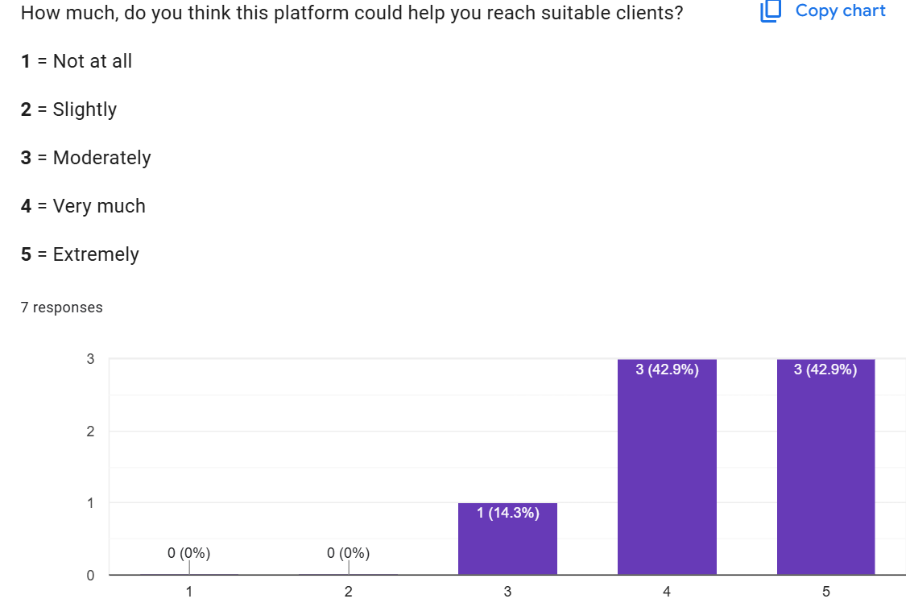6) Cât de util e matching-ul?

7) Ai avea încredere pentru uz profesional?

8) Ai folosi în practica ta?
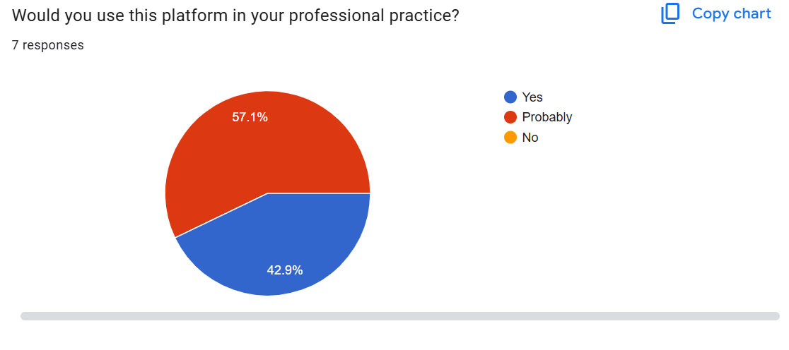💰 Acceptarea comisionului de 15% (Therapists)
Pentru a confirma intenția reală de colaborare, am introdus un pas obligatoriu: terapeuții pot crea cont doar după acceptarea explicită a contractului digital care include comisionul de 15% per ședință.
Aceasta este o validare directă a modelului nostru de business: fără acceptare, contul nu poate fi finalizat.
📊 Dovezi utilizare reală (Therapists) — PostHog + DB
Pentru a demonstra utilizarea reală, am instrumentat aplicația cu PostHog și am verificat și numărul din baza de date.
PostHog arată evenimente pentru dashboard-ul de terapeut (ex: încărcare dashboard, click-uri în dashboard), iar baza de date confirmă existența conturilor de terapeuți.
Evenimente PostHog (therapists)
Număr terapeuți în baza de date
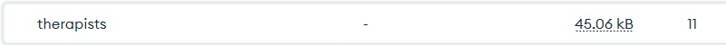🎓 Dovadă că terapeuții sunt reali (credibilitate)
Pentru a demonstra că platforma este folosită de profesioniști reali, am colectat documente/diplome (exemple) ale terapeuților.
✅ Concluzie (Therapists)
- Terapeuți reali au testat MVP-ul și au oferit feedback (7 răspunsuri).
- Acceptarea comisionului de 15% este parte obligatorie a creării contului (validare business model).
- PostHog confirmă utilizare (evenimente în dashboard).
- Există dovezi de credibilitate (documente/diplome).
→ Milestone 8 (Therapists) este validat: există cerere reală și acceptare a modelului de colaborare.
Milestone 8 (Clients) — First Sale
Validarea cererii: clienți reali folosesc flow-ul de matching + booking și există intenție de plată / fee.
🎯 Scopul milestone-ului (Clients)
Pentru clienți, “First Sale” înseamnă validarea că utilizatorii: înțeleg valoarea matching-ului, parcurg flow-ul până la rezultate și există intenție de plată (fee mic / abonament / extra features).
Am colectat feedback dintr-un formular (13 răspunsuri) + am urmărit comportamentul în aplicație prin PostHog.
📝 Feedback clienți (formular) — dovezi + interpretare
Rezumat rezultate (13 răspunsuri):
- Experiență overall: 84.6% au dat 5/5, 15.4% au dat 4/5.
- Ușurință în folosire: 76.9% au dat 5/5, 15.4% au dat 4/5, 7.7% au dat 3/5.
- Relevanța recomandărilor: 61.5% au dat 5/5, 38.5% au dat 4/5.
- Ajută mai mult decât metodele tradiționale: 84.6% “Yes”, 15.4% “Probably”.
- Utilizare în viitor: 76.9% “Yes”, 23.1% “Probably yes”.
- Willingness to pay: 100% pozitiv (38.5% “Yes”, 61.5% “Probably yes”).
1) Overall experience
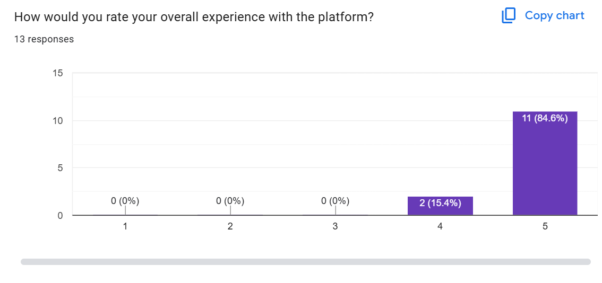2) Ease of use
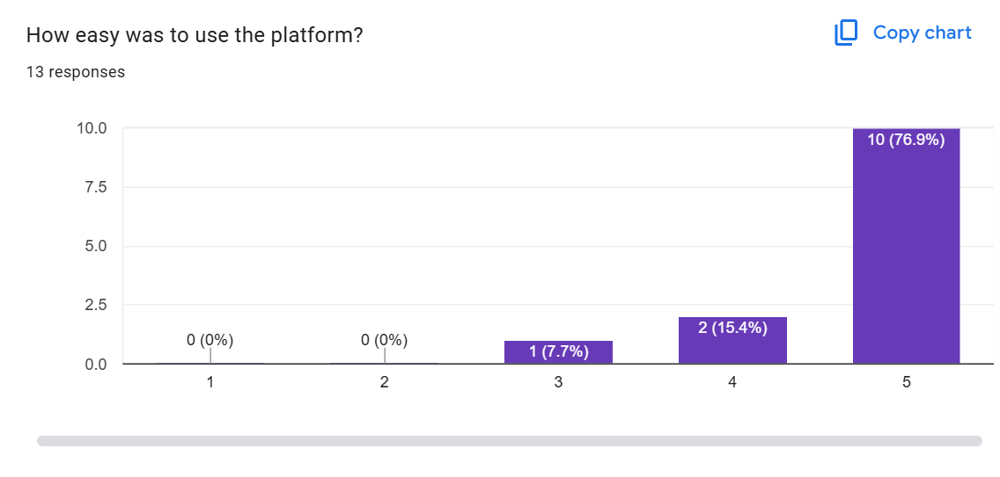3) Relevance of recommendations
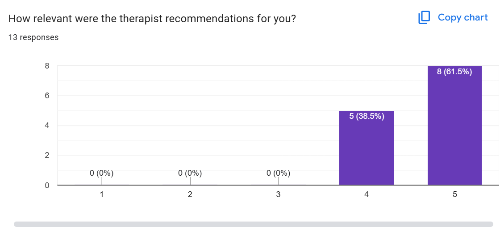4) Helps find a suitable therapist
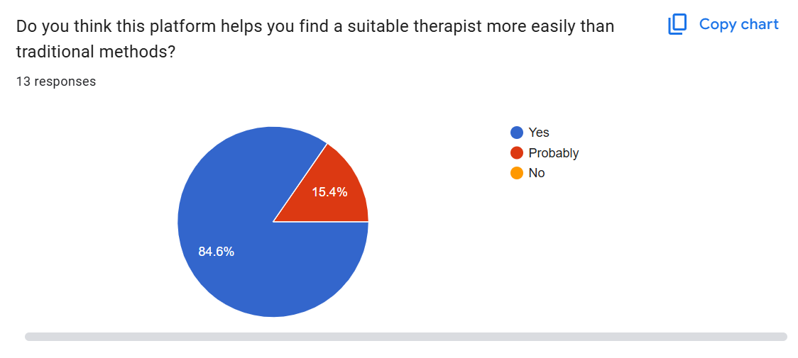5) Would you use it in the future?
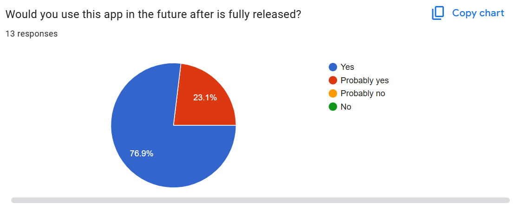6) Willing to pay a small fee
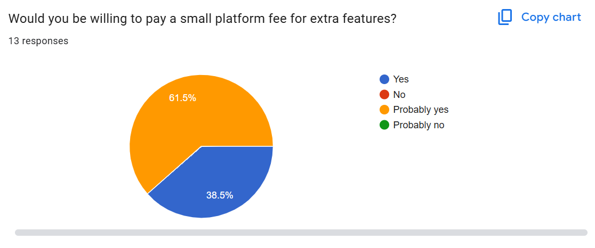7) Ce ți-a plăcut cel mai mult? (pagina 1)
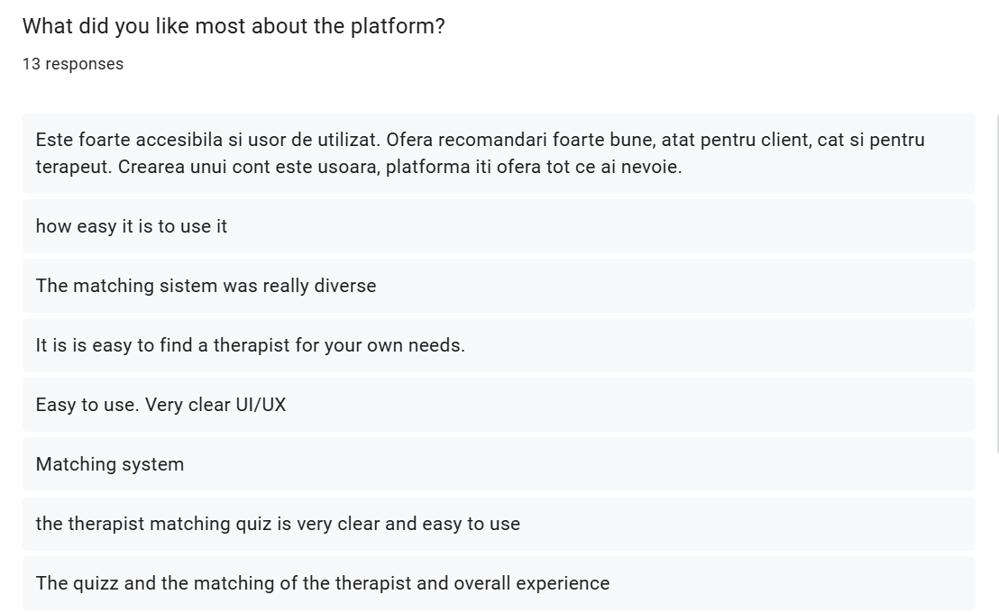8) Ce ți-a plăcut cel mai mult? (pagina 2)
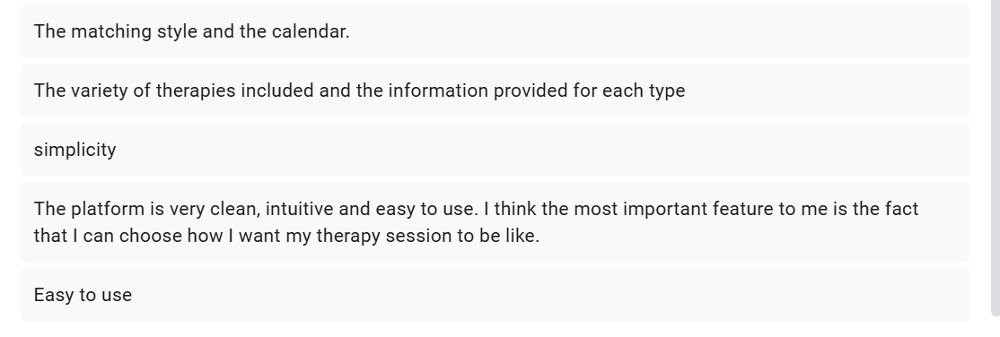9) Ce ai îmbunătăți? (pagina 1)
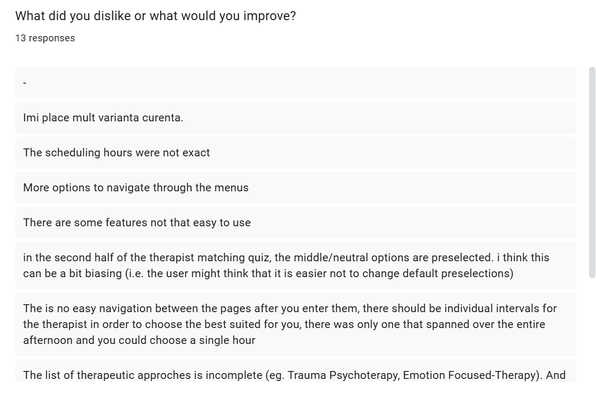10) Ce ai îmbunătăți? (pagina 2)
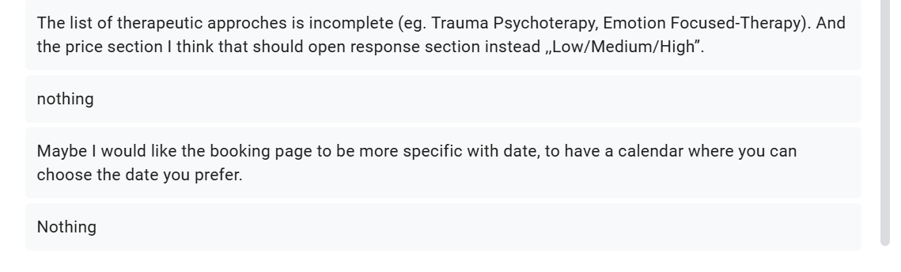Insights din răspunsuri deschise (clienți):
- Puncte forte repetate: matching-ul, claritatea UI/UX, ușurința de utilizare, calendar/booking.
- Îmbunătățiri cerute: mai multe abordări, flow mai bun între pagini, booking mai granular, evitarea opțiunilor “preselectate” care pot induce bias.
📊 Dovezi utilizare reală (Clients) — PostHog + DB
Am instrumentat flow-ul principal al clientului în PostHog (dashboard → find match → results → booking click). Astfel putem demonstra că există utilizatori reali care parcurg pașii de conversie.
În plus, baza de date confirmă existența conturilor și a programărilor (appointments).
Evenimente PostHog (clients) + funnel
Număr conturi clienți (DB)
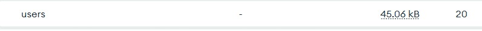Număr appointments (DB)
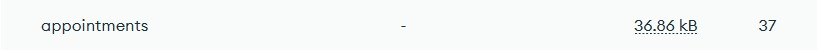✅ Concluzie Milestone 8 (Therapists + Clients)
- Therapists: feedback pozitiv + acceptare contract/comision 15% + dovezi PostHog + credibilitate (documente).
- Clients: satisfacție foarte mare (majoritatea 5/5), relevanță ridicată a recomandărilor și intenție pozitivă de plată (100% yes/probably yes).
- PostHog confirmă parcurgerea flow-ului cheie (dashboard → matching → booking click).
- Baza de date confirmă existența conturilor și a appointment-urilor.
→ Milestone 8 este validat: MVP-ul este folosit de utilizatori reali și există semnale clare de monetizare (fee/comision).